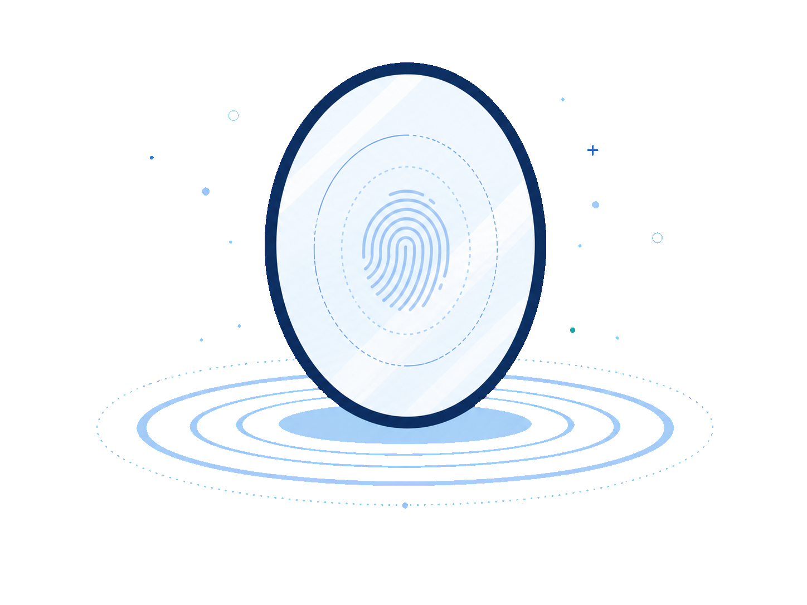

A live privacy experiment
Who am I?
Your digital reflection starts here.
Websites can learn a lot about you before you take action. This privacy mirror shows which signals your browser, device, and environment expose—so you can make informed choices.
Nothing collected yetThe basic scan runs in this tab and adds no outside requests.
Your report is not uploaded by this demo. You can clear it at any time.

Your privacy mirror
Here’s what’s visible.
The basic scan reads only information already available inside this browser tab.